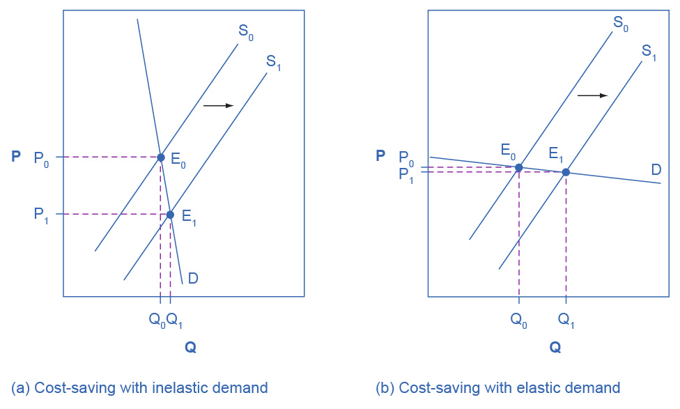
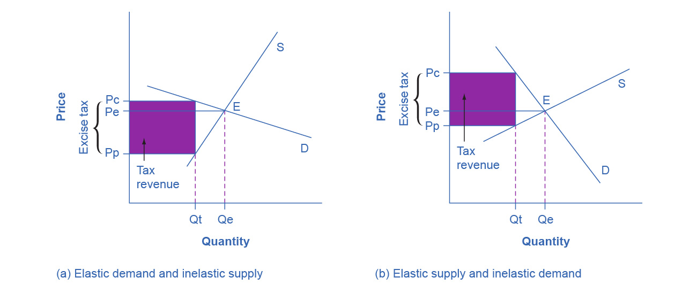

5.3 Elasticity and Pricing
Learning Objectives
By the end of this section, you will be able to:
- Analyze how price elasticities impact revenue
- Evaluate how elasticity can cause shifts in demand and supply
- Predict how the long-run and short-run impacts of elasticity affect equilibrium
- Explain how the elasticity of demand and supply determine the incidence of a tax on buyers and sellers
Studying elasticities is useful for a number of reasons, pricing being most important. Let’s explore how elasticity relates to revenue and pricing, both in the long and short run. First, let’s look at the elasticities of some common goods and services.
Table 5.2 shows a selection of demand elasticities for different goods and services drawn from a variety of different studies by economists, listed in order of increasing elasticity.
Table 5.2 Some Selected Elasticities of Demand
Note that demand for necessities such as housing and electricity is inelastic, while items that are not necessities such as restaurant meals are more price-sensitive. If the price of a restaurant meal increases by 10%, the quantity demanded will decrease by 22.7%. A 10% increase in the price of housing will cause only a slight decrease of 1.2% in the quantity of housing demanded.
Link It Up
Read this article for an example of price elasticity that may have affected you.
Does Raising Price Bring in More Revenue?
Imagine that a band on tour is playing in an indoor arena with 15,000 seats. To keep this example simple, assume that the band keeps all the money from ticket sales. Assume further that the band pays the costs for its appearance, but that these costs, like travel, and setting up the stage, are the same regardless of how many people are in the audience. Finally, assume that all the tickets have the same price. (The same insights apply if ticket prices are more expensive for some seats than for others, but the calculations become more complicated.) The band knows that it faces a downward-sloping demand curve; that is, if the band raises the ticket price, it will sell fewer seats. How should the band set the ticket price to generate the most total revenue, which in this example, because costs are fixed, will also mean the highest profits for the band? Should the band sell more tickets at a lower price or fewer tickets at a higher price?
The key concept in thinking about collecting the most revenue is the price elasticity of demand. Total revenue is price times the quantity of tickets sold. Imagine that the band starts off thinking about a certain price, which will result in the sale of a certain quantity of tickets. The three possibilities are in Table 5.3. If demand is elastic at that price level, then the band should cut the price, because the percentage drop in price will result in an even larger percentage increase in the quantity sold—thus raising total revenue. However, if demand is inelastic at that original quantity level, then the band should raise the ticket price, because a certain percentage increase in price will result in a smaller percentage decrease in the quantity sold—and total revenue will rise. If demand has a unitary elasticity at that quantity, then an equal percentage change in quantity will offset a moderate percentage change in the price—so the band will earn the same revenue whether it (moderately) increases or decreases the ticket price.
Table 5.3 Will the Band Earn More Revenue by Changing Ticket Prices?
What if the band keeps cutting price, because demand is elastic, until it reaches a level where it sells all 15,000 seats in the available arena? If demand remains elastic at that quantity, the band might try to move to a bigger arena, so that it could slash ticket prices further and see a larger percentage increase in the quantity of tickets sold. However, if the 15,000-seat arena is all that is available or if a larger arena would add substantially to costs, then this option may not work.
Conversely, a few bands are so famous, or have such fanatical followings, that demand for tickets may be inelastic right up to the point where the arena is full. These bands can, if they wish, keep raising the ticket price. Ironically, some of the most popular bands could make more revenue by setting prices so high that the arena is not full—but those who buy the tickets would have to pay very high prices. However, bands sometimes choose to sell tickets for less than the absolute maximum they might be able to charge, often in the hope that fans will feel happier and spend more on recordings, T-shirts, and other paraphernalia.
Can Businesses Pass Costs on to Consumers?
Most businesses face a day-to-day struggle to figure out ways to produce at a lower cost, as one pathway to their goal of earning higher profits. However, in some cases, the price of a key input over which the firm has no control may rise. For example, many chemical companies use petroleum as a key input, but they have no control over the world market price for crude oil. Coffee shops use coffee as a key input, but they have no control over the world market price of coffee. If the cost of a key input rises, can the firm pass those higher costs along to consumers in the form of higher prices? Conversely, if new and less expensive ways of producing are invented, can the firm keep the benefits in the form of higher profits, or will the market pressure them to pass the gains along to consumers in the form of lower prices? The price elasticity of demand plays a key role in answering these questions.
Imagine that as a consumer of legal pharmaceutical products, you read a newspaper story that a technological breakthrough in the production of aspirin has occurred, so that every aspirin factory can now produce aspirin more cheaply. What does this discovery mean to you? Figure 5.8 illustrates two possibilities. In Figure 5.8 (a), the demand curve is highly inelastic. In this case, a technological breakthrough that shifts supply to the right, from S0 to S1, so that the equilibrium shifts from E0 to E1, creates a substantially lower price for the product with relatively little impact on the quantity sold. In Figure 5.8 (b), the demand curve is highly elastic. In this case, the technological breakthrough leads to a much greater quantity sold in the market at very close to the original price. Consumers benefit more, in general, when the demand curve is more inelastic because the shift in the supply results in a much lower price for consumers.

Figure 5.8 Passing along Cost Savings to Consumers Cost-saving gains cause supply to shift out to the right from S0 to S1; that is, at any given price, firms will be willing to supply a greater quantity. If demand is inelastic, as in (a), the result of this cost-saving technological improvement will be substantially lower prices. If demand is elastic, as in (b), the result will be only slightly lower prices. Consumers benefit in either case, from a greater quantity at a lower price, but the benefit is greater when demand is inelastic, as in (a).
Aspirin producers may find themselves in a nasty bind here. The situation in Figure 5.8, with extremely inelastic demand, means that a new invention may cause the price to drop dramatically while quantity changes little. As a result, the new production technology can lead to a drop in the revenue that firms earn from aspirin sales. However, if strong competition exists between aspirin producers, each producer may have little choice but to search for and implement any breakthrough that allows it to reduce production costs. After all, if one firm decides not to implement such a cost-saving technology, other firms that do can drive them out of business.
Since demand for food is generally inelastic, farmers may often face the situation in Figure 5.8 (a). That is, a surge in production leads to a severe drop in price that can actually decrease the total revenue that farmers receive. Conversely, poor weather or other conditions that cause a terrible year for farm production can sharply raise prices so that the total revenue that the farmer receives increases. The Clear It Up box discusses how these issues relate to coffee.
Clear It Up
How do coffee prices fluctuate?
Coffee is an international crop. The top five coffee-exporting nations are Brazil, Vietnam, Colombia, Indonesia, and Ethiopia. In these nations and others, 20 million families depend on selling coffee beans as their main source of income. These families are exposed to enormous risk, because the world price of coffee bounces up and down. For example, in 1993, the world price of coffee was about 50 cents per pound. In 1995 it was four times as high, at $2 per pound. By 1997 it had fallen by half to $1.00 per pound. In 1998 it leaped back up to $2 per pound. By 2001 it had fallen back to 46 cents a pound. By early 2011 it rose to about $2.31 per pound. By the end of 2012, the price had fallen back to about $1.31 per pound. Since then, the price of coffee has continued to fluctuate.
The reason for these price fluctuations lies in a combination of inelastic demand and shifts in supply. The elasticity of coffee demand is only about 0.3; that is, a 10% rise in the price of coffee leads to a decline of about 3% in the quantity of coffee consumed. When a major frost hit the Brazilian coffee crop in 1994, coffee supply shifted to the left with an inelastic demand curve, leading to much higher prices. Conversely, when Vietnam entered the world coffee market as a major producer in the late 1990s, the supply curve shifted out to the right. With a highly inelastic demand curve, coffee prices fell dramatically. Figure 5.8 (a) illustrates this situation.
Elasticity also reveals whether firms can pass higher costs that they incur on to consumers. Addictive substances, for which demand is inelastic, are products for which producers can pass higher costs on to consumers. For example, the demand for cigarettes is relatively inelastic among regular smokers who are somewhat addicted. Economic research suggests that increasing cigarette prices by 10% leads to about a 3% reduction in the quantity of cigarettes that adults smoke, so the elasticity of demand for cigarettes is 0.3. If society increases taxes on companies that produce cigarettes, the result will be, as in Figure 5.9 (a), that the supply curve shifts from S0 to S1. However, as the equilibrium moves from E0 to E1, governments mainly pass along these taxes to consumers in the form of higher prices. These higher taxes on cigarettes will raise tax revenue for the government, but they will not much affect the quantity of smoking.
If the goal is to reduce the quantity of cigarettes demanded, we must achieve it by shifting this inelastic demand back to the left, perhaps with public programs to discourage cigarette use or to help people to quit. For example, anti-smoking advertising campaigns have shown some ability to reduce smoking. However, if cigarette demand were more elastic, as in Figure 5.9 (b), then an increase in taxes that shifts supply from S0 to S1 and equilibrium from E0 to E1 would reduce the quantity of cigarettes smoked substantially. Youth smoking seems to be more elastic than adult smoking—that is, the quantity of youth smoking will fall by a greater percentage than the quantity of adult smoking in response to a given percentage increase in price.

Figure 5.9 Passing along Higher Costs to Consumers Higher costs, like a higher tax on cigarette companies for the example we gave in the text, lead supply to shift to the left. This shift is identical in (a) and (b). However, in (a), where demand is inelastic, companies largely can pass the cost increase along to consumers in the form of higher prices, without much of a decline in equilibrium quantity. In (b), demand is elastic, so the shift in supply results primarily in a lower equilibrium quantity. Consumers do not benefit in either case, but in (a), they pay a higher price for the same quantity, while in (b), they must buy a lower quantity (and presumably needing to shift their consumption elsewhere).
Elasticity and Tax Incidence
The example of cigarette taxes demonstrated that because demand is inelastic, taxes are not effective at reducing the equilibrium quantity of smoking, and they are mainly passed along to consumers in the form of higher prices. The analysis, or manner, of how a tax burden is divided between consumers and producers is called tax incidence. Typically, the tax incidence, or burden, falls both on the consumers and producers of the taxed good. However, if one wants to predict which group will bear most of the burden, all one needs to do is examine the elasticity of demand and supply. In the tobacco example, the tax burden falls on the most inelastic side of the market.
If demand is more inelastic than supply, consumers bear most of the tax burden, and if supply is more inelastic than demand, sellers bear most of the tax burden.
The intuition for this is simple. When the demand is inelastic, consumers are not very responsive to price changes, and the quantity demanded reduces only modestly when the tax is introduced. In the case of smoking, the demand is inelastic because consumers are addicted to the product. The government can then pass the tax burden along to consumers in the form of higher prices, without much of a decline in the equilibrium quantity.
Similarly, when a government introduces a tax in a market with an inelastic supply, such as, for example, beachfront hotels, and sellers have no alternative than to accept lower prices for their business, taxes do not greatly affect the equilibrium quantity. The tax burden now passes on to the sellers. If the supply was elastic and sellers had the possibility of reorganizing their businesses to avoid supplying the taxed good, the tax burden on the sellers would be much smaller. The tax would result in a much lower quantity sold instead of lower prices received. Figure 5.10 illustrates this relationship between the tax incidence and elasticity of demand and supply.

Figure 5.10 Elasticity and Tax Incidence An excise tax introduces a wedge between the price paid by consumers (Pc) and the price received by producers (Pp). The vertical distance between Pc and Pp is the amount of the tax per unit. Pe is the equilibrium price prior to introduction of the tax. (a) When the demand is more elastic than supply, the tax incidence on consumers Pc – Pe is lower than the tax incidence on producers Pe – Pp. (b) When the supply is more elastic than demand, the tax incidence on consumers Pc – Pe is larger than the tax incidence on producers Pe – Pp. The more elastic the demand and supply curves, the lower the tax revenue.
In Figure 5.10 (a), the supply is inelastic and the demand is elastic, such as in the example of beachfront hotels. While consumers may have other vacation choices, sellers can’t easily move their businesses. By introducing a tax, the government essentially creates a wedge between the price paid by consumers Pc and the price received by producers Pp. In other words, of the total price paid by consumers, part is retained by the sellers and part is paid to the government in the form of a tax. The distance between Pc and Pp is the tax rate. The new market price is Pc, but sellers receive only Pp per unit sold, as they pay Pc-Pp to the government. Since we can view a tax as raising the costs of production, this could also be represented by a leftward shift of the supply curve, where the new supply curve would intercept the demand at the new quantity Qt. For simplicity, Figure 5.10 omits the shift in the supply curve.
The tax revenue is given by the shaded area, which we obtain by multiplying the tax per unit by the total quantity sold Qt. The tax incidence on the consumers is given by the difference between the price paid Pc and the initial equilibrium price Pe. The tax incidence on the sellers is given by the difference between the initial equilibrium price Pe and the price they receive after the tax is introduced Pp. In Figure 5.10 (a), the tax burden falls disproportionately on the sellers, and a larger proportion of the tax revenue (the shaded area) is due to the resulting lower price received by the sellers than by the resulting higher prices paid by the buyers. Figure 5.10 (b) describes the example of the tobacco excise tax where the supply is more elastic than demand. The tax incidence now falls disproportionately on consumers, as shown by the large difference between the price they pay, Pc, and the initial equilibrium price, Pe. Sellers receive a lower price than before the tax, but this difference is much smaller than the change in consumers’ price. From this analysis one can also predict whether a tax is likely to create a large revenue or not. The more elastic the demand curve, the more likely that consumers will reduce quantity instead of paying higher prices. The more elastic the supply curve, the more likely that sellers will reduce the quantity sold, instead of taking lower prices. In a market where both the demand and supply are very elastic, the imposition of an excise tax generates low revenue.
Some believe that excise taxes hurt mainly the specific industries they target. For example, the medical device excise tax, which was implemented in 2013, has been controversial for it can delay industry profitability and therefore hamper start-ups and medical innovation. The tax was repealed in late 2019. However, whether the tax burden falls mostly on the medical device industry or on the patients depends simply on the elasticity of demand and supply.
Long-Run vs. Short-Run Impact
Elasticities are often lower in the short run than in the long run. On the demand side of the market, it can sometimes be difficult to change Qd in the short run, but easier in the long run. Consumption of energy is a clear example. In the short run, it is not easy for a person to make substantial changes in energy consumption. Maybe you can carpool to work sometimes or adjust your home thermostat by a few degrees if the cost of energy rises, but that is about all. However, in the long run you can purchase a car that gets more miles to the gallon, choose a job that is closer to where you live, buy more energy-efficient home appliances, or install more insulation in your home. As a result, the elasticity of demand for energy is somewhat inelastic in the short run, but much more elastic in the long run.
Figure 5.11 is an example, based roughly on historical experience, for the responsiveness of Qd to price changes. In 1973, the price of crude oil was $12 per barrel and total consumption in the U.S. economy was 17 million barrels per day. That year, the nations who were members of the Organization of Petroleum Exporting Countries (OPEC) cut off oil exports to the United States for six months because the Arab members of OPEC disagreed with the U.S. support for Israel. OPEC did not bring exports back to their earlier levels until 1975—a policy that we can interpret as a shift of the supply curve to the left in the U.S. petroleum market. Figure 5.11 (a) and Figure 5.11 (b) show the same original equilibrium point and the same identical shift of a supply curve to the left from S0 to S1.

Figure 5.11 How a Shift in Supply Can Affect Price or Quantity The intersection (E0) between demand curve D and supply curve S0 is the same in both (a) and (b). The shift of supply to the left from S0 to S1 is identical in both (a) and (b). The new equilibrium (E1) has a higher price and a lower quantity than the original equilibrium (E0) in both (a) and (b). However, the shape of the demand curve D is different in (a) and (b), being more elastic in (b) than in (a). As a result, the shift in supply can result either in a new equilibrium with a much higher price and an only slightly smaller quantity, as in (a), with more inelastic demand, or in a new equilibrium with only a small increase in price and a relatively larger reduction in quantity, as in (b), with more elastic demand.
Figure 5.11 (a) shows inelastic demand for oil in the short run similar to that which existed for the United States in 1973. In Figure 5.11 (a), the new equilibrium (E1) occurs at a price of $25 per barrel, roughly double the price before the OPEC shock, and an equilibrium quantity of 16 million barrels per day. Figure 5.11 (b) shows what the outcome would have been if the U.S. demand for oil had been more elastic, a result more likely over the long term. This alternative equilibrium (E1) would have resulted in a smaller price increase to $14 per barrel and larger reduction in equilibrium quantity to 13 million barrels per day. In 1983, for example, U.S. petroleum consumption was 15.3 million barrels a day, which was lower than in 1973 or 1975. U.S. petroleum consumption was down even though the U.S. economy was about one-fourth larger in 1983 than it had been in 1973. The primary reason for the lower quantity was that higher energy prices spurred conservation efforts, and after a decade of home insulation, more fuel-efficient cars, more efficient appliances and machinery, and other fuel-conserving choices, the demand curve for energy had become more elastic.
On the supply side of markets, producers of goods and services typically find it easier to expand production in the long term of several years rather than in the short run of a few months. After all, in the short run it can be costly or difficult to build a new factory, hire many new workers, or open new stores. However, over a few years, all of these are possible.
In most markets for goods and services, prices bounce up and down more than quantities in the short run, but quantities often move more than prices in the long run. The underlying reason for this pattern is that supply and demand are often inelastic in the short run, so that shifts in either demand or supply can cause a relatively greater change in prices. However, since supply and demand are more elastic in the long run, the long-run movements in prices are more muted, while quantity adjusts more easily in the long run.